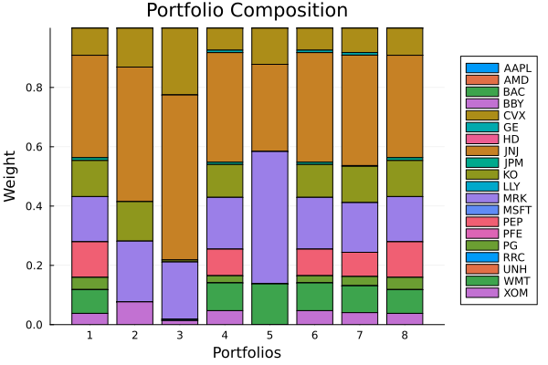
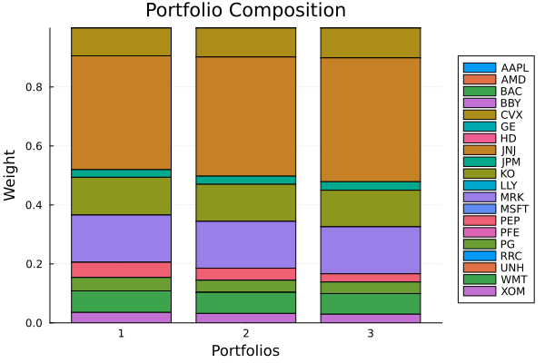

The source files can be found in examples/.
OWA risk measures
Ordered Weighted Average (OWA) risk measures describe portfolio risk as a linear combination of sorted portfolio returns. The combination weights — the OWA weights vector — determine which quantile of the distribution is emphasised: a vector that loads heavily on the worst few observations gives a CVaR-like tail measure, while one that spreads weight across the whole distribution is more like a dispersion measure.
Three things make OWA measures attractive:
- Generalisation. CVaR, Gini Mean Difference, Tail Gini, Worst Realisation, and Range are all special cases with closed-form weight vectors. You can define your own by passing any valid
wvector toOrderedWeightsArray. - L-moment perspective. A particular family of OWA weights captures the L-moments of the return distribution, giving a distribution-free risk summary that bridges tail quantiles and distributional spread.
- Linear programming. Every OWA measure leads to a linear programme in the portfolio weights, so it composes cleanly with
MeanRisk,RiskBudgeting, and the rest of the framework without requiring a covariance matrix.
Reach for OWA risk measures when you want a tail or dispersion measure that does not require a covariance matrix and that generalises beyond CVaR — especially when the return distribution is non-normal and you want the measure to respond to the full shape of the distribution rather than only to variance or a single quantile.
OrderedWeightsArray supports two internal formulations: exact (ExactOrderedWeightsArray), which solves a small LP per portfolio evaluation and is fast for a small number of assets/observations but does not scale to large problems; and approximate (ApproxOrderedWeightsArray, the default), which approximates the OWA objective with a set of p-norms and solves as a second-order cone problem, scaling to the normal S&P 500 slice used throughout the examples. All optimisations in this example use the approximate formulation, which is the default and is appropriate for the ~252 observations and ~20 assets used here.
using PortfolioOptimisers, PrettyTables, DataFramesresfmt = (v, i, j) -> begin if j == 1 return v else return isa(v, Number) ? "$(round(v * 100, digits = 3)) %" : v endend;1. Data and shared setup
using CSV, TimeSeries, ClarabelX = TimeArray(CSV.File(joinpath(@__DIR__, "..", "SP500.csv.gz")); timestamp = :Date)[(end - 252):end]rd = prices_to_returns(X)T = size(rd.X, 1)slv = [Solver(; name = :clarabel1, solver = Clarabel.Optimizer, settings = Dict("verbose" => false), check_sol = (; allow_local = true, allow_almost = true)), Solver(; name = :clarabel2, solver = Clarabel.Optimizer, settings = Dict("verbose" => false, "max_step_fraction" => 0.95), check_sol = (; allow_local = true, allow_almost = true)), Solver(; name = :clarabel3, solver = Clarabel.Optimizer, settings = Dict("verbose" => false, "max_step_fraction" => 0.9), check_sol = (; allow_local = true, allow_almost = true)), Solver(; name = :clarabel4, solver = Clarabel.Optimizer, settings = Dict("verbose" => false, "max_step_fraction" => 0.6, "max_iter" => 1500, "tol_gap_abs" => 1e-4, "tol_gap_rel" => 1e-4, "tol_ktratio" => 1e-3, "tol_feas" => 1e-4, "tol_infeas_abs" => 1e-4, "tol_infeas_rel" => 1e-4, "reduced_tol_gap_abs" => 1e-4, "reduced_tol_gap_rel" => 1e-4, "reduced_tol_ktratio" => 1e-3, "reduced_tol_feas" => 1e-4, "reduced_tol_infeas_abs" => 1e-4, "reduced_tol_infeas_rel" => 1e-4), check_sol = (; allow_local = true, allow_almost = true))]pr = prior(EmpiricalPrior(), rd)opt = JuMPOptimiser(; pe = pr, slv = slv)JuMPOptimiser
pe ┼ LowOrderPrior
│ X ┼ 252×20 Matrix{Float64}
│ o_X ┼ nothing
│ mu ┼ 20-element Vector{Float64}
│ sigma ┼ 20×20 Matrix{Float64}
│ chol ┼ nothing
│ w ┼ nothing
│ ens ┼ nothing
│ kld ┼ nothing
│ ow ┼ nothing
│ rr ┼ nothing
│ fpr ┼ nothing
│ Z ┴ nothing
slv ┼ 4-element Vector{Solver}
│ Solver ⋯
│ Solver ⋯
│ Solver ⋯
│ Solver ⋯
wb ┼ WeightBounds
│ lb ┼ Float64: 0.0
│ ub ┴ Float64: 1.0
bgt ┼ Float64: 1.0
sbgt ┼ nothing
gbgt ┼ nothing
xbgt ┼ Bool: false
lt ┼ nothing
st ┼ nothing
lcse ┼ nothing
cte ┼ nothing
gcarde ┼ nothing
sgcarde ┼ nothing
smtx ┼ nothing
sgmtx ┼ nothing
slt ┼ nothing
sst ┼ nothing
sglt ┼ nothing
sgst ┼ nothing
tn ┼ nothing
fees ┼ nothing
sets ┼ nothing
tr ┼ nothing
ple ┼ nothing
ret ┼ ArithmeticReturn
│ settings ┼ JuMPReturnsSettings
│ │ scale ┼ Float64: 1.0
│ │ lb ┼ nothing
│ │ rte ┼ Bool: true
│ │ fee ┼ Bool: true
│ │ mic ┴ Bool: true
│ ucs ┼ nothing
│ mu ┴ nothing
sca ┼ SumScalariser()
ccnt ┼ nothing
cobj ┼ nothing
sc ┼ Int64: 1
so ┼ Int64: 1
ss ┼ nothing
card ┼ nothing
scard ┼ nothing
l2c ┼ nothing
lpc ┼ nothing
linfc ┼ nothing
l1 ┼ nothing
l2 ┼ nothing
lp ┼ nothing
linf ┼ nothing
brt ┼ Bool: false
x_src ┼ Symbol: :prior
z_src ┼ Symbol: :data
strict ┴ Bool: false
2. Closed-form OWA weight vectors
The library ships functions that return the OWA weights for the classical special cases. Each function takes T (the number of observations) and returns a length-T vector. Those vectors are passed as w to OrderedWeightsArray to build a risk measure.
| Function | Measure | Intuition |
|---|---|---|
owa_gmd(T) | Gini Mean Difference | Average absolute spread across all pairs; a dispersion measure |
owa_cvar(T) | CVaR | Recovers the standard 5 % CVaR via the OWA framework |
owa_tg(T) | Tail Gini | Gini spread over the worst tail; more sensitive to tail shape than CVaR |
owa_tgrg(T) | Tail Gini Range | Tail Gini of losses minus tail Gini of gains; two-sided tail |
owa_wr(T) | Worst Realisation | Equivalent to min-return; entirely determined by the single worst day |
owa_rg(T) | Range | Max return minus min return; full return span |
owa_cvarrg(T) | CVaR Range | CVaR of losses minus CVaR of gains |
owa_l_moment_crm(T) | L-moment CRM | Higher-order L-moment convex risk measure |
r_gmd = OrderedWeightsArray(; w = owa_gmd(T))r_cvar = OrderedWeightsArray(; w = owa_cvar(T))r_tg = OrderedWeightsArray(; w = owa_tg(T))r_tgrg = OrderedWeightsArray(; w = owa_tgrg(T))r_wr = OrderedWeightsArray(; w = owa_wr(T))r_rg = OrderedWeightsArray(; w = owa_rg(T))r_cvarrg = OrderedWeightsArray(; w = owa_cvarrg(T))r_lcrm = OrderedWeightsArray(; w = owa_l_moment_crm(T))OrderedWeightsArray
settings ┼ RiskMeasureSettings
│ scale ┼ Float64: 1.0
│ ub ┼ nothing
│ rke ┴ Bool: true
w ┼ 252-element Vector{Float64}
alg ┼ ApproxOrderedWeightsArray
│ p ┴ Vector{Float64}: [2.0, 3.0, 4.0, 10.0, 50.0]
3. Minimising each OWA risk measure
We build a minimum-risk MeanRisk portfolio for each OWA measure and collect the weights. Because all these measures are approximated with p-norms via the default ApproxOrderedWeightsArray, they all solve as second-order cone problems with Clarabel.
rs = [r_gmd, r_cvar, r_tg, r_tgrg, r_wr, r_rg, r_cvarrg, r_lcrm]names_r = ["GMD", "CVaR", "TailGini", "TailGiniRange", "WorstReal", "Range", "CVaRRange", "L-moment"]results = [optimise(MeanRisk(; r = r, opt = opt)) for r in rs]pretty_table(DataFrame(hcat(rd.nx, [r.w for r in results]...), [:assets; Symbol.(names_r)...]); formatters = [resfmt])┌────────┬──────────┬──────────┬──────────┬───────────────┬───────────┬──────────┬───────────┬──────────┐
│ assets │ GMD │ CVaR │ TailGini │ TailGiniRange │ WorstReal │ Range │ CVaRRange │ L-moment │
│ Any │ Any │ Any │ Any │ Any │ Any │ Any │ Any │ Any │
├────────┼──────────┼──────────┼──────────┼───────────────┼───────────┼──────────┼───────────┼──────────┤
│ AAPL │ 0.0 % │ 0.0 % │ 0.0 % │ 0.0 % │ 0.0 % │ 0.0 % │ 0.0 % │ 0.0 % │
│ AMD │ 0.0 % │ 0.0 % │ 0.0 % │ 0.0 % │ 0.0 % │ 0.0 % │ 0.0 % │ 0.0 % │
│ BAC │ 0.0 % │ 0.0 % │ 0.0 % │ 0.0 % │ 0.0 % │ 0.0 % │ 0.0 % │ 0.0 % │
│ BBY │ 0.0 % │ 0.0 % │ 0.0 % │ 0.0 % │ 0.0 % │ 0.0 % │ 0.0 % │ 0.0 % │
│ CVX │ 9.147 % │ 13.126 % │ 22.53 % │ 7.412 % │ 12.205 % │ 7.412 % │ 8.211 % │ 9.147 % │
│ GE │ 0.0 % │ 0.0 % │ 0.0 % │ 0.824 % │ 0.0 % │ 0.824 % │ 0.889 % │ 0.0 % │
│ HD │ 0.0 % │ 0.0 % │ 0.0 % │ 0.0 % │ 0.0 % │ 0.0 % │ 0.0 % │ 0.0 % │
│ JNJ │ 34.514 % │ 45.385 % │ 55.659 % │ 36.976 % │ 29.391 % │ 36.976 % │ 37.248 % │ 34.514 % │
│ JPM │ 0.982 % │ 0.0 % │ 0.0 % │ 0.762 % │ 0.0 % │ 0.762 % │ 0.24 % │ 0.982 % │
│ KO │ 12.165 % │ 13.301 % │ 0.67 % │ 11.095 % │ 0.0 % │ 11.095 % │ 12.238 % │ 12.165 % │
│ LLY │ 0.0 % │ 0.0 % │ 0.0 % │ 0.0 % │ 0.0 % │ 0.0 % │ 0.0 % │ 0.0 % │
│ MRK │ 15.247 % │ 20.513 % │ 19.347 % │ 17.465 % │ 44.659 % │ 17.466 % │ 16.771 % │ 15.247 % │
│ MSFT │ 0.0 % │ 0.0 % │ 0.0 % │ 0.0 % │ 0.0 % │ 0.0 % │ 0.0 % │ 0.0 % │
│ PEP │ 11.995 % │ 0.0 % │ 0.0 % │ 8.971 % │ 0.0 % │ 8.971 % │ 8.174 % │ 11.995 % │
│ PFE │ 0.0 % │ 0.0 % │ 0.0 % │ 0.0 % │ 0.0 % │ 0.0 % │ 0.0 % │ 0.0 % │
│ PG │ 4.126 % │ 0.0 % │ 0.0 % │ 2.401 % │ 0.0 % │ 2.401 % │ 3.119 % │ 4.126 % │
│ RRC │ 0.0 % │ 0.0 % │ 0.418 % │ 0.0 % │ 0.0 % │ 0.0 % │ 0.0 % │ 0.0 % │
│ UNH │ 0.0 % │ 0.0 % │ 0.0 % │ 0.0 % │ 0.0 % │ 0.0 % │ 0.0 % │ 0.0 % │
│ WMT │ 8.009 % │ 0.0 % │ 0.0 % │ 9.357 % │ 13.746 % │ 9.357 % │ 9.056 % │ 8.009 % │
│ XOM │ 3.814 % │ 7.675 % │ 1.375 % │ 4.737 % │ 0.0 % │ 4.737 % │ 4.055 % │ 3.814 % │
└────────┴──────────┴──────────┴──────────┴───────────────┴───────────┴──────────┴───────────┴──────────┘Even though all portfolios minimise risk, the allocations differ substantially because each measure emphasises a different aspect of the distribution:
- GMD penalises pairwise spread — it concentrates into correlated low-volatility names.
- CVaR focuses on the worst 5 % of days and ignores moderate losses.
- TailGini also looks at the tail but responds to its shape (Gini spread within the tail), not only its level.
- WorstRealisation and Range are extreme: the solver pushes all weight into whatever reduces a single day or the full span.
- L-moment CRM distributes attention over many higher-order distributional moments at once.
using StatsPlots, GraphRecipesplot_stacked_bar_composition(results, rd)
4. Default approximate formulation
OrderedWeightsArray with no w and no explicit alg defaults to ApproxOrderedWeightsArray, which approximates the OWA sort with a set of p-norms (p = [2, 3, 4, 10, 50]). The resulting optimisation is a second-order cone programme.
This is the recommended path when you do not need an exact closed-form weight vector and want the solver to use the most tractable formulation.
r_approx = OrderedWeightsArray()res_approx = optimise(MeanRisk(; r = r_approx, opt = opt))println("Approx OWA, max weight: $(round(maximum(res_approx.w)*100; digits=2)) %")Approx OWA, max weight: 34.51 %5. OWA risk measure range — two-sided tail control
OrderedWeightsArrayRange defines a range measure as the difference of two OWA weight vectors — one for losses, one for gains. This is the OWA generalisation of a two-sided risk measure.
The default range is owa_tg (lower tail) minus the reversed owa_tg (upper tail), which is equivalent to owa_tgrg. Passing custom w1 and w2 gives full control over what "bad" and "good" outcomes each side of the range tracks.
# Default range: tail Gini losses vs tail Gini gains.r_range_default = OrderedWeightsArrayRange()# Custom range: CVaR losses vs worst realisation gains.T_obs = Tr_range_custom = OrderedWeightsArrayRange(; w1 = owa_cvar(T_obs), w2 = reverse(owa_wr(T_obs)))res_range_d = optimise(MeanRisk(; r = r_range_default, opt = opt))res_range_c = optimise(MeanRisk(; r = r_range_custom, opt = opt))pretty_table(DataFrame(; :assets => rd.nx, :TailGiniRange => res_range_d.w, :CVaR_vs_WorstGain => res_range_c.w); formatters = [resfmt])┌────────┬───────────────┬───────────────────┐
│ assets │ TailGiniRange │ CVaR_vs_WorstGain │
│ String │ Float64 │ Float64 │
├────────┼───────────────┼───────────────────┤
│ AAPL │ 0.0 % │ 0.0 % │
│ AMD │ 0.0 % │ 0.0 % │
│ BAC │ 0.0 % │ 0.0 % │
│ BBY │ 0.0 % │ 0.0 % │
│ CVX │ 1.142 % │ 0.001 % │
│ GE │ 0.135 % │ 5.749 % │
│ HD │ 3.307 % │ 9.374 % │
│ JNJ │ 51.25 % │ 0.905 % │
│ JPM │ 0.0 % │ 2.551 % │
│ KO │ 7.633 % │ 0.001 % │
│ LLY │ 0.0 % │ 6.687 % │
│ MRK │ 18.155 % │ 24.672 % │
│ MSFT │ 0.0 % │ 0.0 % │
│ PEP │ 0.0 % │ 25.624 % │
│ PFE │ 0.0 % │ 0.001 % │
│ PG │ 0.0 % │ 0.0 % │
│ RRC │ 4.739 % │ 4.657 % │
│ UNH │ 0.0 % │ 0.0 % │
│ WMT │ 4.664 % │ 19.777 % │
│ XOM │ 8.977 % │ 0.0 % │
└────────┴───────────────┴───────────────────┘6. Maximum Sharpe ratio with an OWA measure
OWA risk measures work as the denominator in a risk-adjusted ratio objective too, which lets you find the portfolio that maximises return per unit of tail dispersion rather than return per unit of variance.
rf = 4.2 / 100 / 252res_ratio = optimise(MeanRisk(; r = r_gmd, obj = MaximumRatio(; rf = rf), opt = opt))println("GMD Sharpe portfolio, max weight: $(round(maximum(res_ratio.w)*100; digits=2)) %")pretty_table(DataFrame(; :assets => rd.nx, :weight => res_ratio.w); formatters = [resfmt])GMD Sharpe portfolio, max weight: 66.84 %
┌────────┬──────────┐
│ assets │ weight │
│ String │ Float64 │
├────────┼──────────┤
│ AAPL │ 0.0 % │
│ AMD │ -0.0 % │
│ BAC │ 0.0 % │
│ BBY │ 0.0 % │
│ CVX │ 0.0 % │
│ GE │ 0.0 % │
│ HD │ 0.0 % │
│ JNJ │ 0.0 % │
│ JPM │ 0.0 % │
│ KO │ 0.0 % │
│ LLY │ 0.0 % │
│ MRK │ 66.842 % │
│ MSFT │ 0.0 % │
│ PEP │ 0.0 % │
│ PFE │ 0.0 % │
│ PG │ 0.0 % │
│ RRC │ 0.0 % │
│ UNH │ 0.0 % │
│ WMT │ 0.0 % │
│ XOM │ 33.158 % │
└────────┴──────────┘7. L-moment CRM: controlling risk aversion with g
The NormalisedConstantRelativeRiskAversion estimator generates L-moment CRM weights parameterised by g ∈ (0, 1). As g → 0 the weights concentrate on the worst observations; as g → 1 they spread more evenly across the distribution.
gs = [0.25, 0.5, 0.75]lcrm_results = map(gs) do g w_lcrm = owa_l_moment_crm(T, NormalisedConstantRelativeRiskAversion(; g = g); k = 5) r_lcrm_g = OrderedWeightsArray(; w = w_lcrm) return optimise(MeanRisk(; r = r_lcrm_g, opt = opt))endpretty_table(DataFrame(hcat(rd.nx, [r.w for r in lcrm_results]...), [:assets, Symbol.("g=" .* string.(gs))...]); formatters = [resfmt])┌────────┬──────────┬──────────┬──────────┐
│ assets │ g=0.25 │ g=0.5 │ g=0.75 │
│ Any │ Any │ Any │ Any │
├────────┼──────────┼──────────┼──────────┤
│ AAPL │ 0.0 % │ 0.0 % │ 0.0 % │
│ AMD │ 0.0 % │ 0.0 % │ 0.0 % │
│ BAC │ 0.0 % │ 0.0 % │ 0.0 % │
│ BBY │ 0.0 % │ 0.0 % │ 0.0 % │
│ CVX │ 9.42 % │ 9.829 % │ 10.116 % │
│ GE │ 0.0 % │ 0.0 % │ 0.0 % │
│ HD │ 0.0 % │ 0.0 % │ 0.0 % │
│ JNJ │ 38.628 % │ 40.414 % │ 42.017 % │
│ JPM │ 2.583 % │ 2.759 % │ 2.885 % │
│ KO │ 12.796 % │ 12.55 % │ 12.423 % │
│ LLY │ 0.0 % │ 0.0 % │ 0.0 % │
│ MRK │ 16.025 % │ 15.906 % │ 15.91 % │
│ MSFT │ 0.0 % │ 0.0 % │ 0.0 % │
│ PEP │ 5.156 % │ 4.071 % │ 2.781 % │
│ PFE │ 0.0 % │ 0.0 % │ 0.0 % │
│ PG │ 4.535 % │ 4.112 % │ 3.921 % │
│ RRC │ 0.0 % │ 0.0 % │ 0.0 % │
│ UNH │ 0.0 % │ 0.0 % │ 0.0 % │
│ WMT │ 7.294 % │ 7.159 % │ 7.008 % │
│ XOM │ 3.563 % │ 3.2 % │ 2.939 % │
└────────┴──────────┴──────────┴──────────┘Lower g concentrates into defensive names (the worst-day sensitivity dominates); higher g spreads across more assets as the estimator starts to care about moderate returns too.
# The risk-aversion sweep, side by side: lower `g` (left) loads the defensive names harder.plot_stacked_bar_composition(lcrm_results, rd)
Summary
OWA risk measures offer a linear-programme-compatible family that spans the full spectrum from worst-realisation to distributional dispersion:
- Closed-form vectors (
owa_gmd,owa_tg,owa_cvar, …) plug directly intoOrderedWeightsArraywith no solver required for weight construction. - Default approximate formulation (
ApproxOrderedWeightsArray) scales to realistic universes without any code changes. - L-moment CRM with
NormalisedConstantRelativeRiskAversionandggives a continuously tunable risk-aversion dial. - Range variants (
OrderedWeightsArrayRange) track two-sided tail exposure.
This page was generated using Literate.jl.